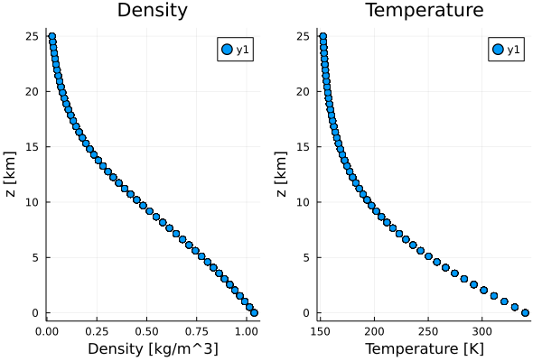
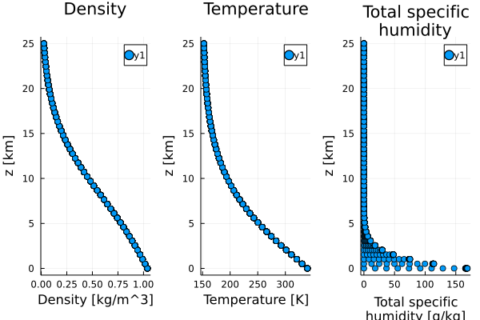

Tested Profiles
Thermodynamics.jl is tested using a set of profiles specified in src/TestedProfiles.jl.
Dry Phase
using Thermodynamics
using Thermodynamics.TemperatureProfiles
using Thermodynamics.TestedProfiles
using UnPack
using CLIMAParameters
using CLIMAParameters.Planet
using Plots
struct EarthParameterSet <: AbstractEarthParameterSet end;
const param_set = EarthParameterSet();
thermo_dir = dirname(dirname(pathof(Thermodynamics)));
profiles = TestedProfiles.PhaseDryProfiles(param_set, Array{Float32});
@unpack T, ρ, z = profiles
p1 = scatter(ρ, z./10^3, xlabel="Density [kg/m^3]", ylabel="z [km]", title="Density");
p2 = scatter(T, z./10^3, xlabel="Temperature [K]", ylabel="z [km]", title="Temperature");
plot(p1, p2, layout=(1,2))
savefig("tested_profiles_dry.svg");
Moist Phase in thermodynamic equilibrium
using Thermodynamics
using Thermodynamics.TemperatureProfiles
using Thermodynamics.TestedProfiles
using UnPack
using CLIMAParameters
using CLIMAParameters.Planet
using Plots
struct EarthParameterSet <: AbstractEarthParameterSet end;
const param_set = EarthParameterSet();
thermo_dir = dirname(dirname(pathof(Thermodynamics)));
profiles = TestedProfiles.PhaseEquilProfiles(param_set, Array{Float32});
@unpack T, ρ, q_tot, z = profiles
p1 = scatter(ρ, z./10^3, xlabel="Density [kg/m^3]", ylabel="z [km]", title="Density");
p2 = scatter(T, z./10^3, xlabel="Temperature [K]", ylabel="z [km]", title="Temperature");
p3 = scatter(q_tot*1000, z./10^3, xlabel="Total specific\nhumidity [g/kg]", ylabel="z [km]", title="Total specific\nhumidity");
plot(p1, p2, p3, layout=(1,3))
savefig("tested_profiles_virt_temp.svg")